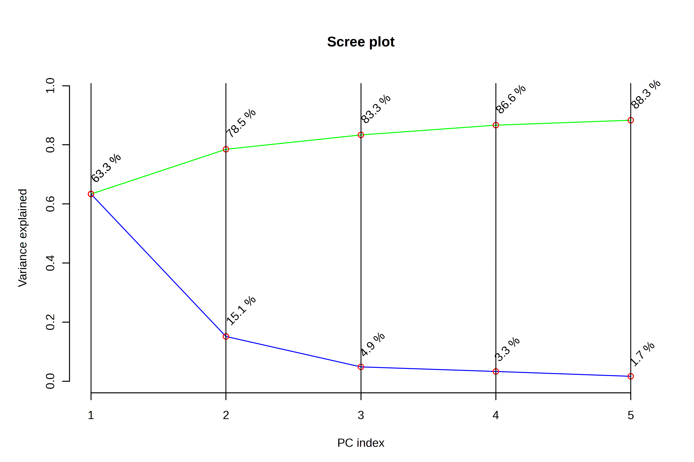
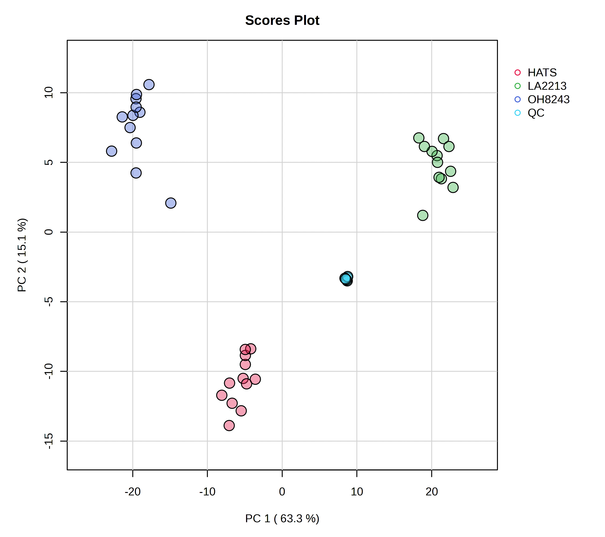

Data analysis with MetaboAnalyst
1 Introduction
Now that we have a filtered, final feature table, we can get started on our data analysis, including understanding if our data is of good quality before we begin to make biological interpretations as to what our results mean. We are going to conduct this analysis using MetaboAnalyst which is at version 6.0 when I put together this tutorial. You can read more about MetaboAnalyist on their website or in their publications (Ewald et al. 2024).
1.1 Data formatting
Before we upload our data, let’s make sure its in a suitable format. If we go to the Data Formats link on the left side of the website, we can see example data sets which will help us format our data. Our data looks like this right out of MZmine:

Our data contains samples in rows, and features in columns.
We will start with doing statistics (one factor) and we have a peak intensity table, so the file called lcms_table.csv is a good one for us to look at.

In this data, we have features in rows and samples in columns. There is also a header row which contains the unique sample names, and a second row called Label which contains the groups. We will need to adjust our data to look like this. This includes
- Adding a row called Label which contains the sample groups (here, QC, HATS, LA2213, or OH8243).
- Creating a single column with the mz_rt as a unique identifier. We can do this with the function
=CONCATENATE()in Excel. Then we can fill down the row. Then be sure to copy this column andPaste>Paste special>Valuessince when we later remove some of the other columns that are inputs to this one, the formulas will break.
- Now we can remove row ID, row m/z and row retention time.
Our data should now look like this:
2 Import into MetaboAnalyst
Remember that when you are using MetaboAnalyst through the web browser that it will eventually time out, so starting an analysis, and walking away for a period of time is not a good idea. Make sure you keep good notes on what you do during your analysis.
Navigate to https://www.metaboanalyst.ca/ and click on the red “Click here to start button”.
We have already processed out spectra so we are going to click on Statistical Analysis (one factor).
Now we want to upload our data. We have our file saved as a .csv and our data is as peak intensities. In our case, samples are in columns and data is unpaired. Once we have done this, we can press submit just to the right of our input.

3 Data processing
3.1 Data check
Once the data has been imported, we can first look at the data integrity check.
We see that:
- Samples are in columns and features in rows
- Our data is in
.csvformat - We have 42 samples and 2514 peaks - this is what we would expect
- Samples are not paired - this is what we would expect
- 3 groups were dtected - I might expect 4 groups - OH8243, LA2213, HATS, and QCs. If we click the “Edit Groups” button we can see that the Label for each of our groups has inherited correctly, but that it seems like QC isn’t being counted as a group.
- A total of 0 (0%) missing values were detected - this makes sense as data that is missing here is coded as zero.
If we agree with this, we can click Proceed. MetaboAnalyst will bring you directly to the Data filtering step, but we can go back one to see how missing values are handled.
3.2 Missing values
Here you can tell MetaboAnalyst what you want done with missing values. Here we don’t have any, but if you did you could indicate:
- Whether you want to remove features that have a lot of missing values
- What you want to do to estimate the remaining missing values.
3.3 Data filters
In this step, we can filter variables based on different rules. These include:
- Features that are very variable i nthe QCs. We don’t need to do this because we already did it manually.
- Features that are near constant across the conditions (i.e., those that have very low standard deviations)
- Features that are very low
I prefer to do this kind of filtering outside of MetaboAnalyst - you could do this in Excel if you wanted to. Here, we are not going to do any more filtering. We can just click Proceed (and skip this filtering).
4 Normalization
We can normalize our samples in different ways. MetaboAnalyst gives is 3 categories of transformation types:
- Sample normalization for general adjustment for systemic differences across samples. Here would could adjust by weight, by a reference features, or by total signal.
- Data transformation including by log (base 10), square root, or cubed room
- Data scaling
You can pick a nornalization and view the result. This is nice because you can see what your normalization will do before picking the most appropriate one.
For example, I am going to try just log10 transforming my samples. When I do this, I can look at the result from both a feature and sample view.
I can contrast this with a log10 transformation and then Pareto scaling.


5 Statistics
Now that our data is set, we can use different analysis methods to understand our data quality, and differences among sample groups. Remember, there are analyses we want to do both with and without the QCs. I like to see a PCA that includes the QCs, but then I’d remove them and retain our three tomato groups for further analysis.
Let’s look with our QCs at the PCA first, and then we will remove those samples.
5.1 PCA





That that we can see that our QCs are tightly clustering together, we can save that PCA scores plot and remove our QC samples. We can do that by navigating to Processing > Data editor in the left part of the browser.

Don’t forget to re-normalize.